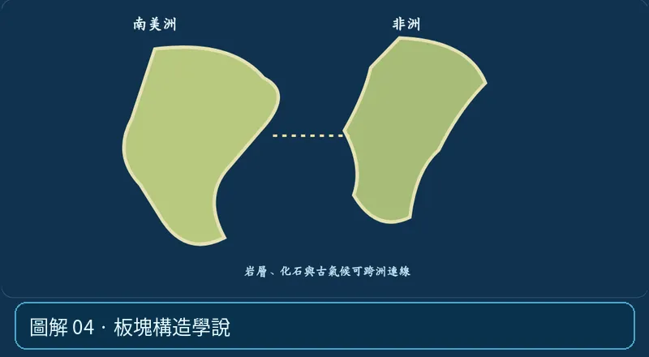

第 04 單元｜圖解 4/6｜課本 p.77–80
板塊構造學說
板塊是由岩石圈組成的大片堅硬板塊，可能包含海洋或大陸部分。板塊在較能長時間變形的軟流圈上方運動。
① 看一眼② 操作圖③ 自己推理④ 揭開解答
🔬 這張圖，請自己動手試
操作圖上方的頁籤、滑桿或按鈕；圖片也能左右滑動放大觀看。
互動圖解 · 板塊構造學說

原創 SVG 地科教學模型，方便理解，非真實比例、非即時地震資料；互動無法載入時仍有靜態圖。
STEP 01 · 先觀察
👀 眼睛先找線索
先從拼圖證據想到「大陸會動」，再回到磁條帶圖想到「海底也會生成與移動」。
💡 為什麼是這樣？
板塊包括岩石圈的海洋與大陸部分；大陸不是在固定海底上單獨滑動，而是隨板塊一起移動。
🎯 換個問法想一題
板塊只能由大陸地殼組成嗎？
我想好了，點開看答案 ↓
不能。板塊是岩石圈的一部分，可含海洋及大陸地殼。
⚡ 一句記住：板塊不只是大陸